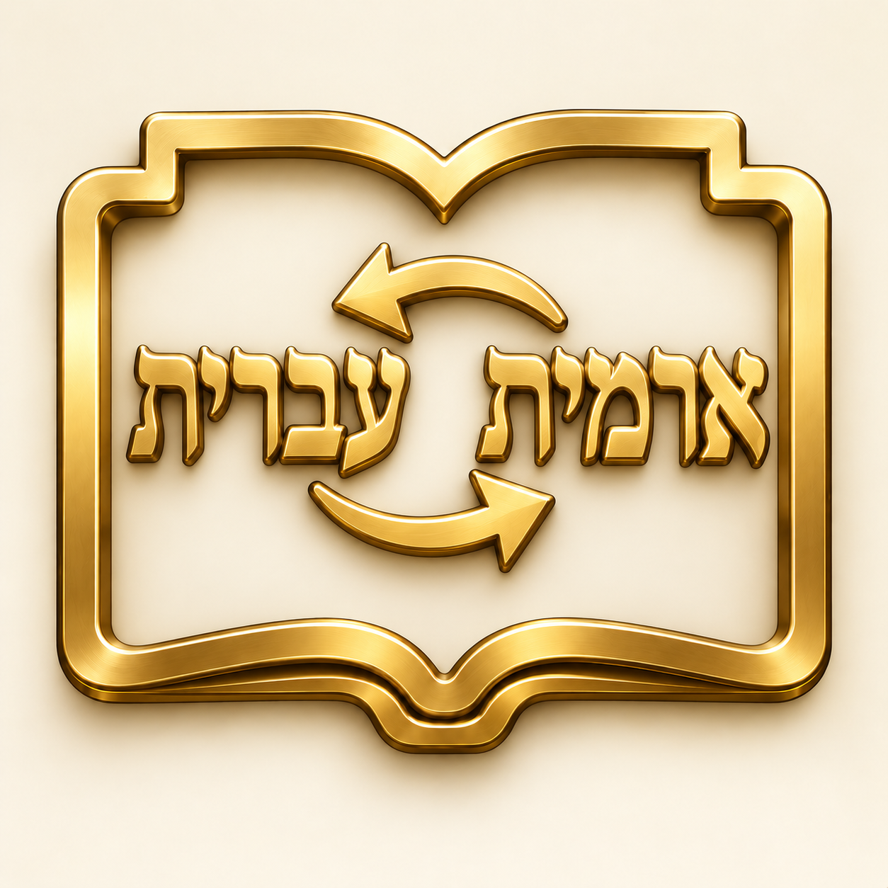

מילון ארמי־עברי
הקלידו מילה או ביטוי, עם ניקוד או בלעדיו. באוצריא אפשר לבחור מילה בטקסט וללחוץ עליה במקש הימני, ואז לבחור ״ארמית לעברית״. הודעה קצרה תציג עד שתי משמעויות בלי לעבור מן הטקסט. לחצו עליה לפתיחת הערך המלא, או בחרו ״פתיחת המילון״ בתפריט.
למילה עשויות להיות כמה משמעויות. כל משמעות מוצגת בנפרד; יש לבחור את המתאימה להקשר. פירושים זהים מאוחדים, והערך המלא מופיע בלחיצה על ״הערך המלא ומקורו״. החיפוש מוצא מילים וביטויים הרשומים במילון ואינו מחבר תרגום של משפט.